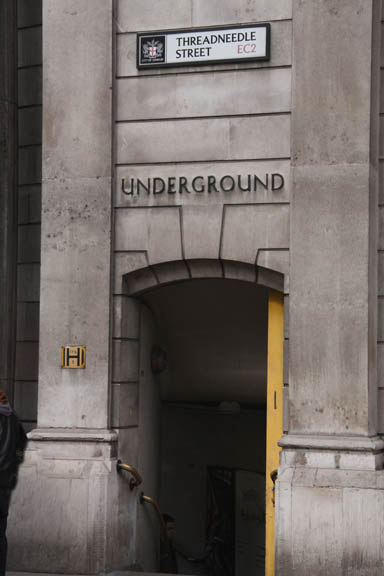
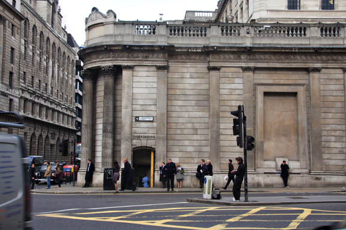
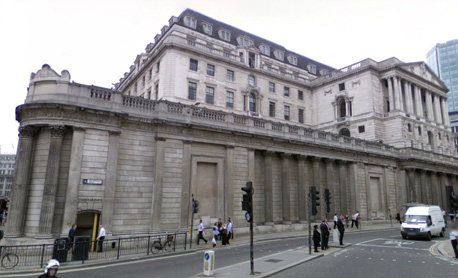
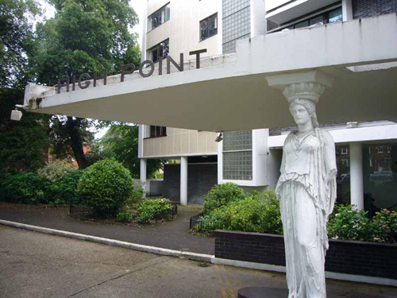
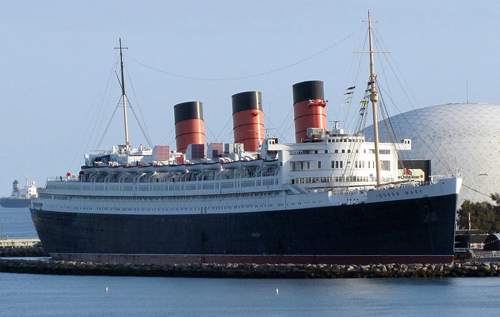

The opening scenes see city workers coming out of the Threadneedle Street entrance of Bank Station.

Next to the Bank of England.


Poirot visits Esmee in her apartment at Highpoint which was the first of two apartment blocks erected in the 1930s on one of the highest points in London at Highgate. The architectural design was by the Russian-born architect Berthold Lubetkin, the structural design by the Danish engineer Ove Arup and the construction by Kier. It was built in 1935 for the entrepreneur Sigmund Gestetner, but was never used for its intended purpose of housing Gestetner company staff. One of the best examples of early International style architecture in London. (Also used in 'Lord Edgware Dies' and 'The Affair at the Victory Ball').

Much of the action purportedly takes place on the 'Queen Mary' but, as she had been sold in 1967 and is now berthed at Long Beach, California, the directors made clever use of old footage of the ship and a set was built to replicate the deck area and interiors.
